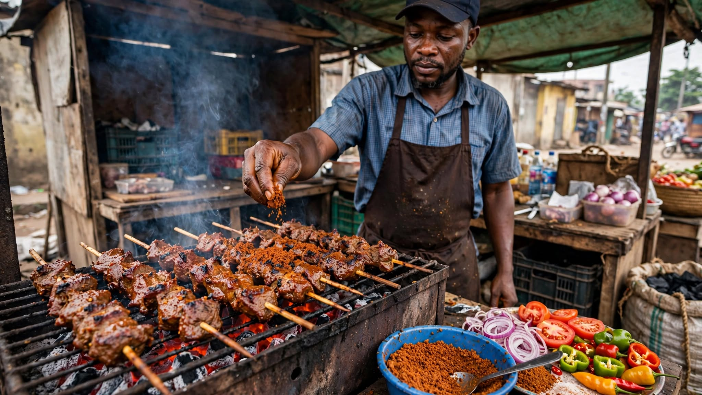
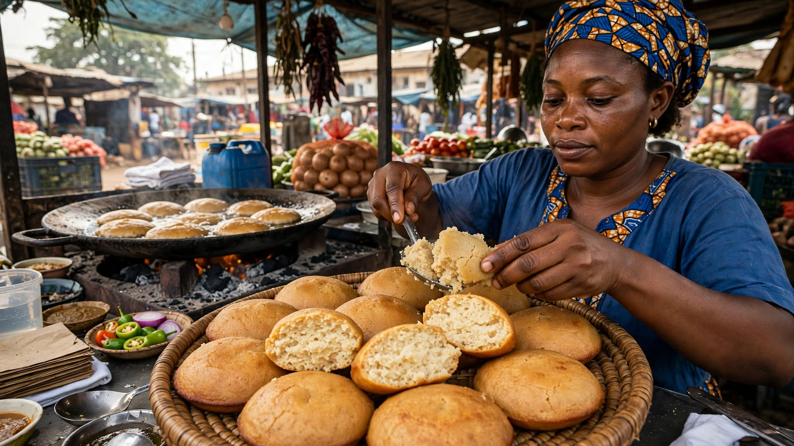
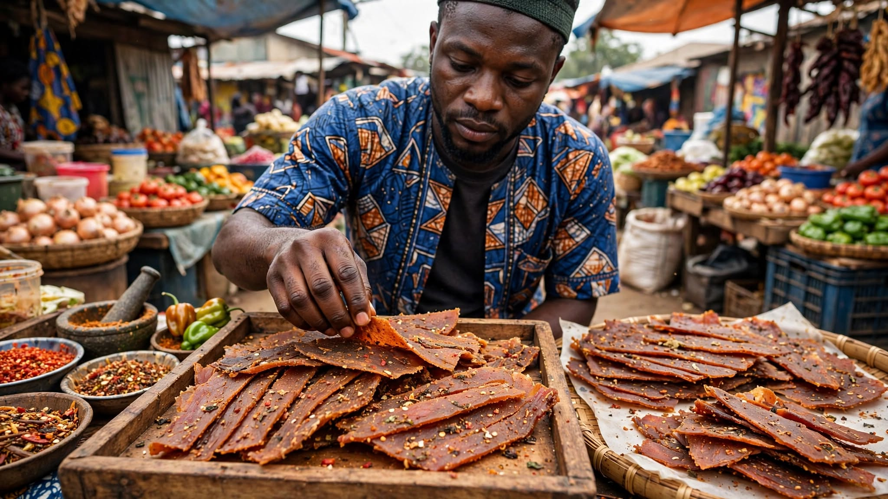

Suya
Spicy grilled meat served with onions, tomatoes, and other local accompaniments.
Taste Abuja
Explore popular local foods, discover what they contain, learn about typical prices, and find ideas for your next affordable food adventure in Abuja.
Explore the Food GalleryAbuja is home to a variety of delicious and affordable foods. From spicy suya to soft masa and crunchy kilishi, street food offers students, visitors, and residents a convenient way to enjoy local flavors.
This guide helps you discover some popular foods and gives you useful information before you decide what to try.

Spicy grilled meat served with onions, tomatoes, and other local accompaniments.

Soft, slightly sweet rice cakes that are popular across northern Nigeria.

Thin, dried and seasoned slices of meat with a rich, spicy flavor.
Browse different Abuja street foods and learn more about each one.
Save foods you want to try using the favorites feature.
Recommend a food or food spot that other visitors should know about.